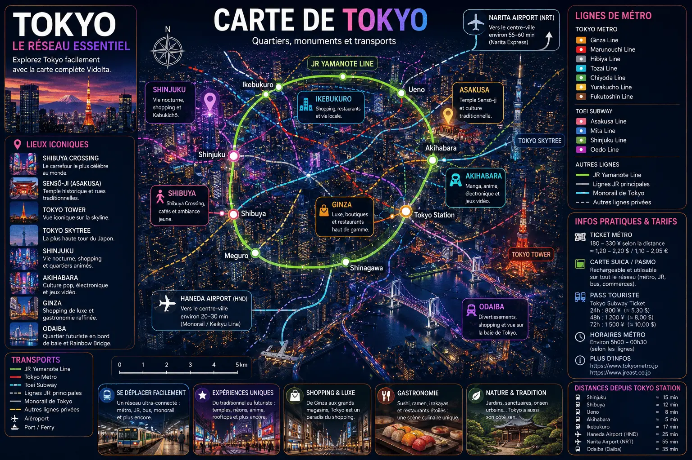

Une version simplifiée et visuelle du réseau essentiel de Tokyo pour comprendre rapidement les quartiers incontournables et les principales connexions ferroviaires.

La ligne circulaire principale de Tokyo relie les quartiers les plus importants comme Shibuya, Shinjuku, Ueno et Tokyo Station.
Shibuya pour l’ambiance jeune, Ginza pour le luxe, Akihabara pour la culture pop et Asakusa pour les temples traditionnels.
Une carte Suica ou Pasmo permet d’utiliser facilement les trains, métros et transports japonais dans toute la ville.
Depuis Tokyo Station, le Shinkansen permet de rejoindre Kyoto, Osaka ou le Mont Fuji rapidement.
Vidolta simplifie les grandes villes grâce à des guides visuels, des conseils mobilité et des expériences pensées pour le mobile.
Retour à Tokyo →